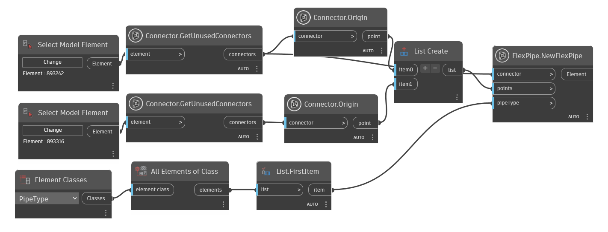
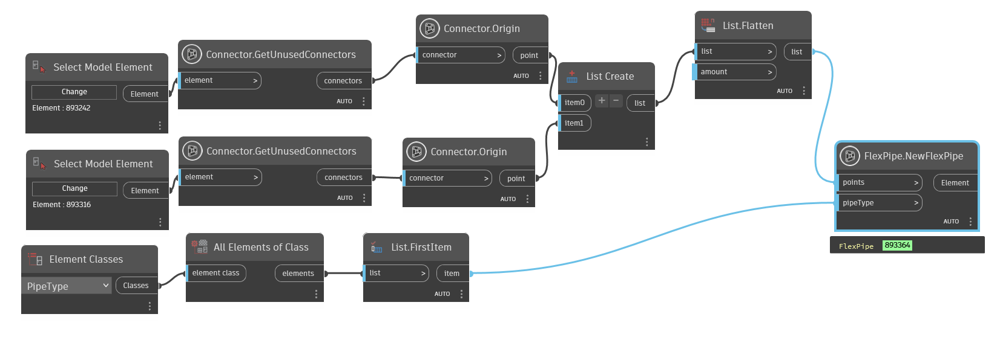
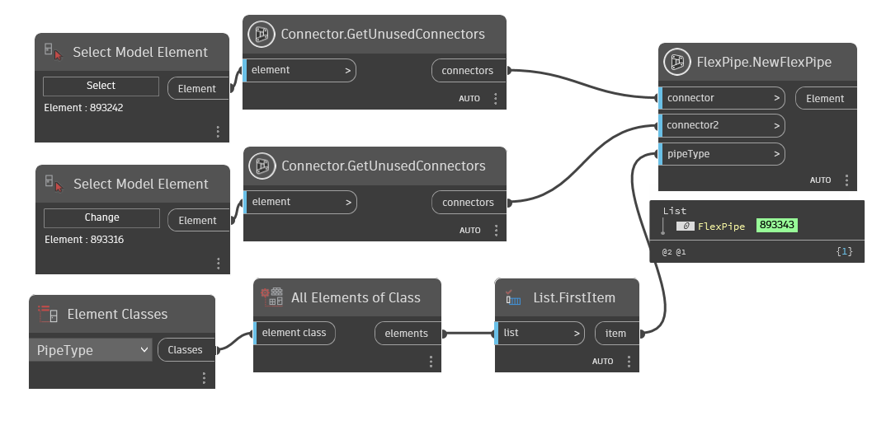
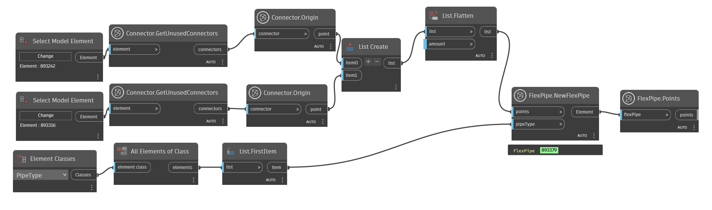

Class FlexPipe
- Namespace
- OpenMEP.Element
- Assembly
- OpenMEP.dll
A flex pipe in the Autodesk Revit MEP product.
public class FlexPipe- Inheritance
-
FlexPipe
- Inherited Members
Remarks
The flex pipe is only available in the Autodesk Revit MEP product.
Methods
CreateByConnectorAndPoints(Element, Connector, List<Point>)
Adds a new flexible pipe into the document, using a connector, point array and pipe type.
[NodeCategory("Create")]
public static Element? CreateByConnectorAndPoints(Element pipeType, Connector connector1, List<Point> points)Parameters
pipeTypeElementThe type of the flexible pipe.
connector1ConnectorThe connector to be connected to the flexible pipe, including the end points.
pointsList<Point>The point array indicating the path of the flexible pipe.
Returns
- Element
If creation was successful then a new flexible pipe is returned, otherwise an exception with failure information will be thrown.
Examples

Remarks
If the connector is a fitting or equipment connector of the correct domain, and if the connector's direction matches the direction of the flexible pipe to be created, the connectors will be automatically connected. A transition fitting will be added at the connector(s) if necessary. If the connector's type, domain, does not match the one of the input connector, no connection will be established.
Exceptions
- Autodesk.Revit.Exceptions.ArgumentNullException
Thrown when the input argument connector or points is null.
- Autodesk.Revit.Exceptions.InvalidOperationException
Thrown when the flexible pipe cannot be created or regenerate fails.
- Autodesk.Revit.Exceptions.ArgumentException
Thrown if the flexible pipe type does not exist in the given document.
CreateByPoints(Element, List<Point>)
Adds a new flexible pipe into the document, using a point array and pipe type.
[NodeCategory("Create")]
public static Element? CreateByPoints(Element pipeType, List<Point> points)Parameters
pipeTypeElementThe type of the flexible pipe.
pointsList<Point>The point array indicating the path of the flexible pipe, including the end points.
Returns
- Element
If creation was successful then a new flexible pipe is returned, otherwise an exception with failure information will be thrown.
Examples

Exceptions
- Autodesk.Revit.Exceptions.ArgumentNullException
Thrown when the input argument points is null.
- Autodesk.Revit.Exceptions.InvalidOperationException
Thrown when the flexible pipe cannot be created or regenerate fails.
- Autodesk.Revit.Exceptions.ArgumentException
Thrown if the flexible pipe type does not exist in the given document.
CreateByTwoConnector(Element, Connector, Connector)
Adds a new flexible pipe into the document, using two connector, and flexible pipe type.
[NodeCategory("Create")]
public static Element? CreateByTwoConnector(Element pipeType, Connector connector1, Connector connector2)Parameters
pipeTypeElementThe type of the flexible pipe.
connector1ConnectorThe first connector to be connected to the pipe.
connector2ConnectorThe second connector to be connected to the pipe.
Returns
- Element
If creation was successful then a new flexible pipe is returned, otherwise an exception with failure information will be thrown.
Examples

Remarks
If the connectors are fitting or equipment connectors of the correct domain, and if the connectors' direction match the direction of the flexible pipe to be created, the connectors will be automatically connected. A transition fitting will be added at the connector(s) if necessary. If the connector's type, domain, does not match the one of the input connectors, no connection will be established.
Exceptions
- Autodesk.Revit.Exceptions.ArgumentNullException
Thrown when the input argument connector1 or connector2 is null.
- Autodesk.Revit.Exceptions.InvalidOperationException
Thrown when the flexible pipe cannot be created or regenerate fails.
- Autodesk.Revit.Exceptions.ArgumentException
Thrown if the flexible pipe type does not exist in the given document.
Points(Element)
The points of the flex pipe.
[NodeCategory("Query")]
public static List<Point> Points(Element flexPipe)Parameters
flexPipeElement
Returns
- List<Point>
list point of flex pipe
Examples

Remarks
This property is used to retrieve the points of flex pipe, including the end points. If the end points are changed, the connection will be maintained by Revit automatically. The set operation will fail if the modification makes the connection invalid.